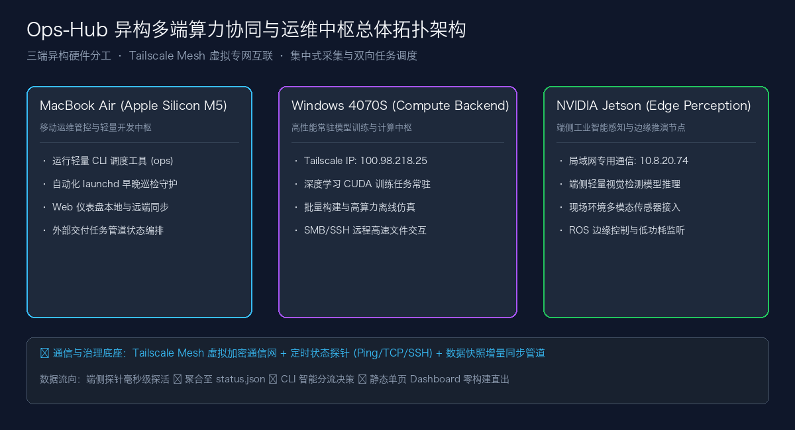

第十九届“西门子杯”中国智能制造挑战赛（2025）· 华北二赛区一等奖
🏆 华北二赛区一等奖
全国初赛 · 智能制造工程设计与应用类赛项：信息化网络化方向（本科及研究生组）
2025 年 · 全国初赛华北二赛区一等奖
上海 · 硕士在读
软件开发与计算机视觉研究
做过边缘端视觉预警、无障碍互助应用，也在维护一些自己日常使用的工具。开发中的尝试和踩坑，会整理在博客里。
从设备联调到日常工具，记录项目的功能、实现与验证。
同一套 Jetson 边缘计算盒子，用于 2026 年西门子杯与研电赛的不同场景展示：工业现场视觉预警，以及无障碍辅助通行感知。两项比赛均获相应赛区二等奖。
共感 LinkAble 是面向视障者及临时出行困难者的无障碍互助应用原型，将 AI 多模态助手、志愿者协助与 SOS 求助组织在同一交互流程中。项目用于 2026 两岸大学生创客大赛逢甲赛区与台湾交流展示，侧重产品方案与交互演示。

将设备状态、任务分流和工程进度放在一个工作总台中，通过 Python CLI、静态看板与定时同步减少重复的状态检查。
按软件、竞赛、研究、产业与工具分类展示；同一项目的不同成果可能分别收录。
更新于 · 14 项软著申请已提交，登记结果待确认。
未找到符合搜索条件的项目
按证书核对赛事、年份、赛区与获奖等级，点击查看完整证书。
🏆 华北二赛区一等奖
全国初赛 · 智能制造工程设计与应用类赛项：信息化网络化方向（本科及研究生组）
2025 年 · 全国初赛华北二赛区一等奖
🏆 华东一赛区二等奖
全国初赛 · 智能制造创新研发类赛项：自由探索方向
2026 年 · 全国初赛华东一赛区二等奖
🏆 上海赛区团队二等奖
边缘计算设备 · 基于边缘智能的无障碍辅助通行感知系统设计与实现
同一边缘设备平台 · 上海分赛区团队二等奖
🏆 国家二等奖
大规模非线性复杂系统数据建模、参数辨识与全局最优控制 (Task 2/3/4)
国二证书 · 数万行仿真数据 · 完整报告
🏆 上海赛区团队三等奖
智能追光式输电线路在线监测装置
2025 年 · 上海分赛区团队三等奖
🏆 国家三等奖
基于大模型多智能体协同的特定人群智能自适应助学辅导系统
国三证书 · 完整实施方案 · 可运行工程
🏆 国家三等奖
基于专家混合推理与威胁情报检索的多智能体网络威胁研判平台
国三证书 · 专家评委答辩 Q&A
🏆 国家三等奖
复杂集成电路系统原理图框图自动识别与拓扑网表重构算法
国三证书 · 答辩问答题库 · 算法代码
🏆 三等奖
基于多模态 AI 的违章建筑智能检测与管理系统
上海市赛事 · 团队三等奖
🏆 银奖
智航长三角：上海无人机低空配送行业分析及人才需求洞察
高教组银奖 · 行业分析报告
立足严谨的实验设计与数学推导，以真问题驱动学术探索与算法创新。
合作单位：上海工程技术大学 · 中国电信 · 中国电子科技集团第50研究所
围绕复杂背景下建筑识别与多尺度漏检问题，开展数据标注复核、独立测试集设计与模型评估，探索检测方法在实际场景中的适用范围。
研究方向：遥感影像变化检测与轻量化网络
针对双时相遥感影像的变化检测，探索多尺度特征表达与轻量化网络设计，结合对比、消融实验及端侧模型推理评估分析方法的适用条件。
在软件工程与学术研究中，我始终坚信系统化与确定性的力量。 无论是设计多智能体状态机还是管理多端算力，我都重视可复现的验证、清晰的接口和可维护的实现。